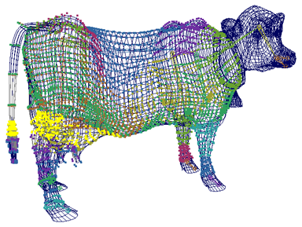

可以使用“编辑成员身份工具”(Edit Membership Tool)直接编辑刚性蒙皮点集成员身份。要采用更直观的方式，也可以使用“绘制集成员身份工具”(Paint Set Membership Tool)来绘制刚性蒙皮点集成员身份（请参见绘制刚性蒙皮点集成员身份）。
注：
还可以使用“关系编辑器”(Relationship Editor)来编辑刚性蒙皮点集成员身份，但是比起使用“编辑成员身份工具”(Edit Membership Tool)或“绘制集成员身份工具”(Paint Set Membership Tool)，这种方法不够直观。
使用“编辑成员身份工具”(Edit Membership Tool)编辑集成员身份
- 切换到对象选择模式。
- 选择要编辑其集的关节。
- 转到组件选择模式（单击“按组件类型选择”图标）。
- 选择“变形 > > 编辑成员身份工具”(Deform > > Edit Membership Tool)。
- 使用指针选择要更改其刚性蒙皮点集成员身份的点。
- 要将点添加到当前选定的集中，请按
 键并单击要添加的点。
键并单击要添加的点。 - 要从当前选定的集中移除点，请按
 键并单击这些点。
键并单击这些点。 - 要将点添加到一些其他的刚性蒙皮点集中，请先选择刚性蒙皮点集的关节。该集中当前存在的点会显示为黄色。现在，如前面所述，通过按 键并单击要添加的点，可选中这些点。